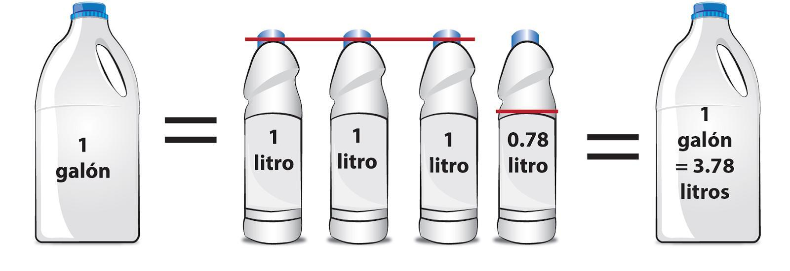

El concepto de galón imperial surgió en Gran Bretaña en el año 1824 a partir del que se usaba para medir la cerveza por aquel entonces, y se basaba en la cantidad de 10 libras de agua destilada calculada en el aire, con un valor de 30 pulgadas de mercurio de presión barométrica y una temperatura de 16,667 grados centígrados. Expresado en pulgadas cúbicas, el volumen del galón imperial equivale a 277,41945; en centímetros cúbicos, por otro lado, resulta un total de 4546,0903.
En Estados Unidos ya habían asignado otro valor a la unidad de galón, que se basaba en la medición del vino en un cilindro de 7 pulgadas de diámetro y 6 de largo. Mientras que en esa época el galón americano equivalía a 230,907 pulgadas cúbicas, en la actualidad su valor es 231.
Ambos galones equivalen a 8 pintas, aunque en los Estados Unidos una pinta equivale a 16 onzas fluidas (fluid ounces), mientras que la pinta imperial equivale a 20 onzas fluidas. Así, el galón estadounidense equivale a 128 onzas fluidas, mientras que el galón imperial equivale a 160. Esto quiere decir que la onza fluida estadounidense mide 1,8047 pulgadas cúbicas, y la imperial mide 1,7339 pulgadas cúbicas. Así, la onza fluida estadounidense es mayor que la imperial, aunque el galón estadounidense es menor.
